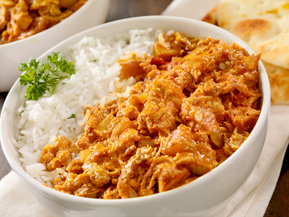

Butter Chicken

Description
Butter chicken, traditionally known as murgh makhani, is an Indian dish
originating in New Delhi. It is a type of curry made from chicken with a
spiced tomato and butter sauce. Its sauce is known for its rich texture. It is
similar to chicken tikka masala, which uses a tomato paste.
Ingredients
- Garam Masala
- Tandoori Masala Powder
- Madras Curry Powder
- Cumin
- Cardamom
- Cayenne pepper
- Black Pepper
- Chicken
- Butter
- Onion
- Garlic
- Lemon Juice
- Ginger
- Tomato Puree
- Cashews
- Yogurt
- Cilantro
Steps
-
Make a spice mix by combining garam masala, tandoori masala, curry powder,
cumin, cardamom, cayenne, salt, and black pepper in a small bowl; set aside.
-
Place chicken in a large bowl and add 1/2 of the spice mixture; turn to coat
evenly.
-
Melt 1 tablespoon butter in a large skillet over medium heat. Add chicken;
cook and stir until lightly browned, about 10 minutes. Remove from heat.
-
Melt remaining 2 tablespoons butter in a large saucepan over medium heat.
Add onion; cook and stir until soft and translucent, about 5 minutes. Stir
in remainder of the spice mixture, garlic, lemon juice, and ginger; cook and
stir until combined, about 1 minute.
-
Stir tomato puree into onion mixture and cook, stirring frequently, about 2
minutes. Pour in half-and-half and yogurt. Reduce heat to low and simmer
sauce, stirring frequently, about 10 minutes. Remove from heat.
-
Blend cashews in a blender until finely ground. Add sauce to the blender;
puree until smooth.
-
Pour blended sauce over chicken in the skillet. Simmer until thickened, 10
to 15 minutes. Garnish with cilantro.